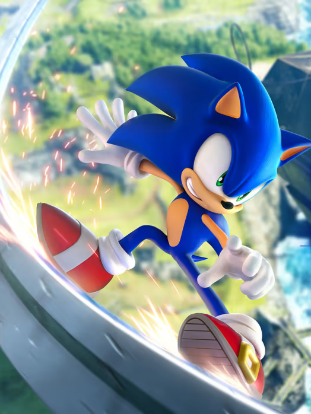
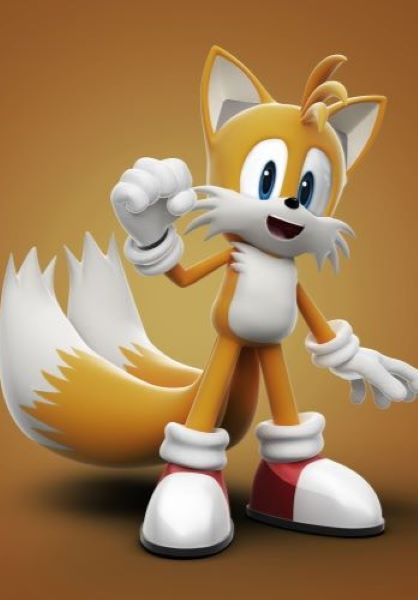
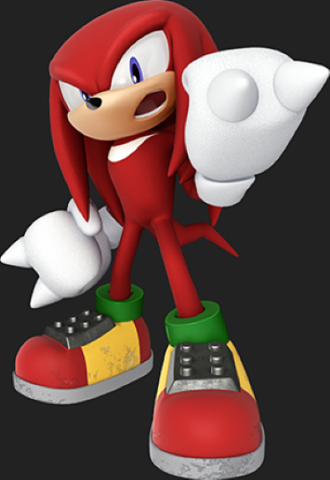

Sonic est un hérisson bleu doté d'une rapidité extraordinaire qui dépasse la vitesse du son.
Il combat le mal et sauve le monde à l'aide de sa grande vitesse, de son agilité et de ses amis.

Tails est un renard à deux queues et est le meilleur ami de notre cher hérisson bleu.
Le suivant partout dans ses aventures, on peut toujours compté sur lui.

Avant d'avoir été l'allié de Sonic, il était son ennemie car le Dr Eggman lui a fait croire que Sonic
l'agressait. Malgré son caractère de gros dur qui ronchonne en permanence, qui est fort et qui est très colérique,
Knuckles est extrêmement naïf. Il se rend compte qu'il a été manipulé par Eggman et devint par la suite un des meilleurs
compagnons de Sonic.